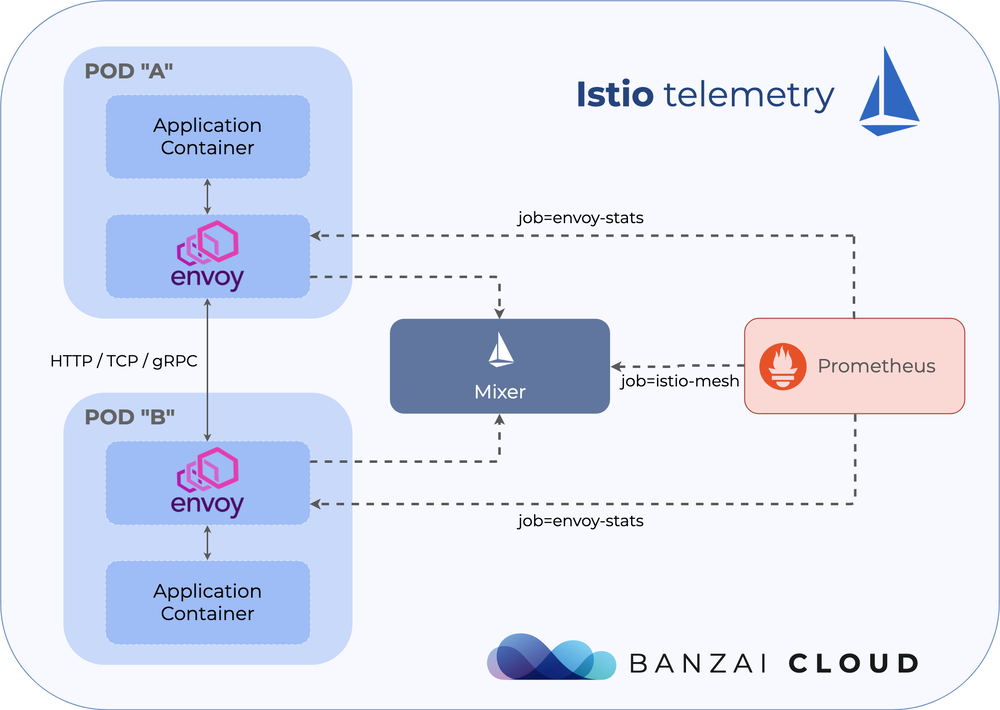
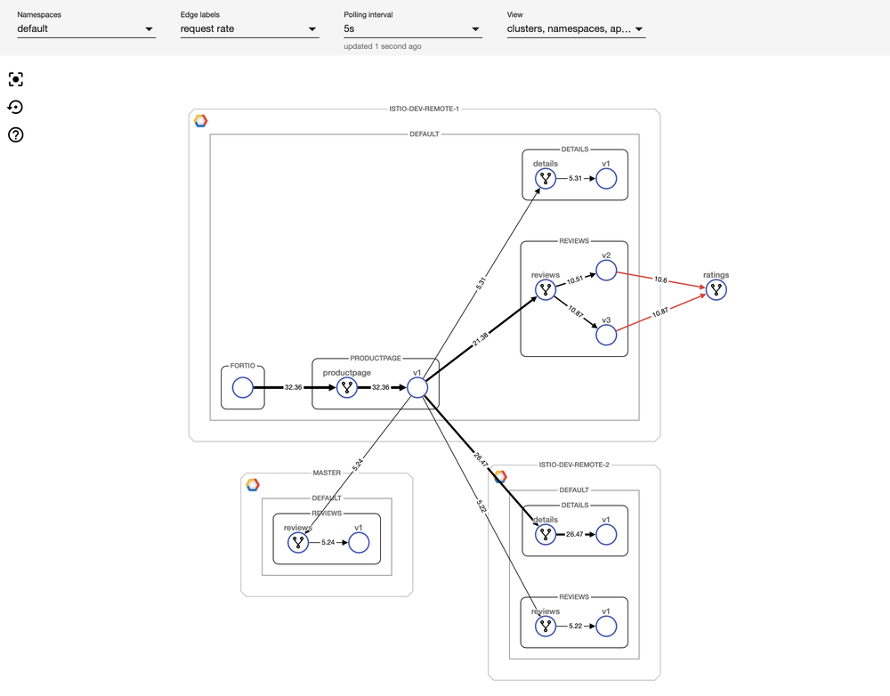

本文为翻译文章，点击查看原文。
编者按
作者是Banzai Cloud的工程师，文章介绍了istio环境下，如何结合Prometheus进行网络度量指标监测，给出了一些示例配置。最后，还推广了一下Banzai Cloud自家的Pipeline，天然支持跨云、混合云情况下的网络度量监测，欢迎体验。
Istio的一个核心功能就是网络流量的可观察性。因为所有服务间的通信都通过Envoy代理，而且Istio的控制平面可以从这些代理收集日志和指标，服务网格能够让你深入了解你的网络状况。虽然Istio的基本安装就装好了收集遥测数据所需的全部组件，但是理解这些组件如何配合，并且使他们能够工作在生产环境中却不是一个容易的事情。如果服务网格扩展到跨越多个云服务提供商的多个群集时，或者在混合云情况下，甚至在边缘计算环境下，这个工作就更加困难。我们在这篇文章中，尽可能解释清楚Istio的遥测是怎么工作的，并且会完整浏览一些监控例子，包括如何配置Prometheus的目标和尝试不同可用的指标。看完这篇文章，你将会对Banzai云中新的Pipeline组件有一个提前了解-它是一个跨云和混合云管理平台，基于顶尖的Istio Operator开发。
Mixer与智能代理（Envoy）
Istio的控制平面由几个不同部分组成，其中一个是Mixer。Mixer自身在Kubernetes里面又有两个不同的独立部署。一个叫做istio-policy，另一个叫istio-telemetry。就像它们的名字，这些组件负责提供控制策略和遥测数据收集功能。
应用pod的sidecar在发起每一个请求前调用istio-policy来进行前置条件检查，并在请求结束后发送遥测数据。sidecar本地缓存了一大批前置检查，使得大量的检查只需要通过缓存就能获得结果。此外，sidecar还对输出的遥测数据进行了缓存，以减少调用mixer的频率。
在Istio的控制平面上运行mixer是可选的，如果你不需要集中式的策略检查和遥测，那么你可以把这些组件彻底关掉。这些组件具有非常高的扩展性，并且能够在自定义资源配置中进行完整配置。如果不想涉及Istio配置过深，或者不想使用自己的后端基础设施去收集日志和遥测数据，而想完全采用默认值（stdio logs，Prometheus指标），你完全可以一点不操心这些。
如果你想用一个不同的adapter - 如Stackdriver- 你需要更新mixer的自定义资源配置。Istio中有几个概念叫做handlers，instances以及rules。Handlers决定一系列后端基础设置适配器是怎么工作以及如何操作的，instances描述了如何把请求的属性映射到适配器的输入上，最后rules把handlers和instances拼接在一起。这些概念如果你想了解更多，你可以查看官方文档，这篇文章最后也会演示一下一些默认的例子。

配置Prometheus收集网格数据
Istio的文档列举了收集自定义指标，以及从Prometheus中查询指标的例子，但缺少一个重要的内容：理解和配置Prometheus的收集目标。
如果你只是想试一试Istio，多半你会部署了它的官方工具Helm Chart（我们更推荐Istio operator以获取更好的体验）。Helm Chart默认包含了Prometheus部署并且也已经配置好。但是在生产环境下，你通常需要自定义设置Prometheus以及配置它的收集目标。这样情况下，你需要手工将Istio抓取目标也配置进去。
首先，我们来看看这些目标。如果你打开这里的配置，你会发现Istio给Prometheus添加了十多个job。大部分是从Istio控制平面收集自定义指标的。你可以看到Pilot通过类似pilot_xds_pushes, pilot_xds_push_timeout 与 pilot_total_xds_internal_errors这些指标上报遥测数据，如xDS推送，超时或内部错误。这些job紧跟在组件名称后，并通过Kubernetes服务中http-monitoring对应的端口上报。下面列举了一个pilot的例子：
- job_name: 'pilot'
kubernetes_sd_configs:
- role: endpoints
namespaces:
names:
- {{ .Release.Namespace }}
relabel_configs:
- source_labels: [__meta_kubernetes_service_name, __meta_kubernetes_endpoint_port_name]
action: keep
regex: istio-pilot;http-monitoring
最重要的两个目标是istio-mesh和envoy-stats。prometheus.yml里面第一项允许Prometheus抓取Mixer，它也含在了以服务遥测数据为中心的，Envoy代理间的所有网络流量数据中。另一方面来说，envoy-stats直接查询Envoy的代理，并收集网络内中央节点的遥测数据（可以查看类似envoy_cluster_upstream_rq这样的指标）。
Mixer通过Pilot来加强Kubernetes中Envoys上报的采样数据，所以从Mixer来的数据包含更丰富的信息，包括服务、负载名称以及其它Kubernetes特定的内容。但也有一些博文提到，从群集中的每一个sidecar代理收集遥测数据，有时候会引起性能问题，所以在一个大的群集里面，有时候完全关闭Mixer，只通过envoy-stats中转也是值得的，即使这意味着会丢失部分功能。
下面是一个istio-mesh添加一个job，查询istio-telemetry服务的prometheus端口的yaml配置，
- job_name: 'istio-mesh'
kubernetes_sd_configs:
- role: endpoints
namespaces:
names:
- {{ .Release.Namespace }}
relabel_configs:
- source_labels: [__meta_kubernetes_service_name, __meta_kubernetes_endpoint_port_name]
action: keep
regex: istio-telemetry;prometheus
envoy-stats的yaml配置更加复杂，但也很重要。它选择pod的条件是端口名称为*-envoy-prom，指标为/stats/prometheus：
- job_name: 'envoy-stats'
metrics_path: /stats/prometheus
kubernetes_sd_configs:
- role: pod
relabel_configs:
- source_labels: [__meta_kubernetes_pod_container_port_name]
action: keep
regex: '.*-envoy-prom'
使用Helm Chart部署Prometheus到群集中，部署目的地添加到values.yaml文件，或者直接编辑包含premetheus.yaml的configmap，并把它挂载到Prometheus的服务端pod上。
使用Prometheus Operator
群集中部署Prometheus的一个更好的方法是用Prometheus Operator。这种情况下，目标配置稍稍有点不同-不再直接用prometheus.yml，而是通过定义ServiceMonitor的自定义资源，来声明一些列用于监控的服务，并且这个operator在后台自动把这些配置转换为Prometheus的yaml配置。举个例子，一条收集mixer指标的ServiceMonitor记录定义如下：
apiVersion: monitoring.coreos.com/v1
kind: ServiceMonitor
metadata:
name: istio-monitor
labels:
monitoring: services
spec:
selector:
matchExpressions:
- {key: istio, operator: In, values: [mixer]}
namespaceSelector:
matchNames:
- istio-system
jobLabel: istio-mesh
endpoints:
- port: prometheus
interval: 5s
- port: http-monitoring
interval: 5s
它示范了通过匹配标签istio=mixer以及每5秒查询一次终结点端口prometheus和http-monitoring的配置。就像上面这个配置，Mixer通过http-monitoring端口，提供了关于它自己操作的自定义度量指标，也通过prometheus端口提供了聚合的以网络流量服务为中心的一些度量指标。
默认度量指标
Istio文档中提到，度量指标的第一个任务就是Collecting new metrics。它很好地描述了Istio如何最大化的自定义资源去配置instance，handlers和rules，并演示了如何创建一个自定义的，Istio生成并且自动收集的度量指标，当然这属于高级别的话题范畴。大部分普通场景里，默认的度量值就足够覆盖使用场景了，Istio用户也不需要了解背后的概念。
Istio operator（Istio Helm图表也一样）开箱就初始化了默认指标。如果Istio运行在群集中，并配置了Prometheus以从Mixer收集遥测数据，你将不需要做任何网格中服务间的网络流量遥测数据的配置。直到你开始使用Envoy sidecar，你可以使用Prometheus UI（或者用它的查询API）来收集Prometheus收集的指标。
默认指标都是一些标准的信息，如HTTP，gRPC以及TCP请求和响应。每一个请求都是由source代理和destination代理上报的，用以提供流量的不同视角的结果。也许有的请求不是通过destination上报（如果这个请求根本没有经过destination），但是一些标签（如connection_security_policy）只在destination上有效。下面列举一些重要的HTTP指标：
istion_request_total是一个计数器（COUNTER），聚合Kubernetes负载中请求总数，并按照响应码、响应标志和安全策略分组。这在计算负载间的请求量（RPS）的时候很有用。这有一个Bookinfo的例子。它计算productpage和review服务间，最近一小时的每秒请求数request per second，并且按照工作负载域和响应码分组。
sum(rate(istio_requests_total{reporter="source",source_workload="productpage-v1",destination_service_name="reviews"}[1m])) by (source_workload,source_version,destination_service_name,destination_workload,destination_version,request_protocol,response_code)
{destination_service_name="reviews",destination_version="v2",destination_workload="reviews-v2",request_protocol="http",response_code="200",source_version="v1",source_workload="productpage-v1"} 12.71
{destination_service_name="reviews",destination_version="v3",destination_workload="reviews-v3",request_protocol="http",response_code="200",source_version="v1",source_workload="productpage-v1"} 12.72
{destination_service_name="reviews",destination_version="v1",destination_workload="reviews-v1",request_protocol="http",response_code="200",source_version="v1",source_workload="productpage-v1"} 6.35
{destination_service_name="reviews",destination_version="v1",destination_workload="reviews-v1",request_protocol="http",response_code="503",source_version="v1",source_workload="productpage-v1"} 6.37
istio_request_duration_seconds是收集负载间延迟的直方图。以下示例计算productpage和reviews服务之间成功请求的第95百分位延迟，并按工作负载子集对结果进行分组。
histogram_quantile(0.95, sum(rate(istio_request_duration_seconds_bucket{reporter="source",source_workload="productpage-v1",destination_service_name="reviews",response_code="200"}[60m])) by (le,source_workload,source_version,destination_service_name,destination_workload,destination_version,request_protocol))
{destination_service_name="reviews",destination_version="v2",destination_workload="reviews-v2",request_protocol="http",source_version="v1",source_workload="productpage-v1"} 0.1201
{destination_service_name="reviews",destination_version="v3",destination_workload="reviews-v3",request_protocol="http",source_version="v1",source_workload="productpage-v1"} 0.1345
{destination_service_name="reviews",destination_version="v1",destination_workload="reviews-v1",request_protocol="http",source_version="v1",source_workload="productpage-v1"} 0.1234
- 剩下的两个HTTP度量指标是
istio_request_bytes和istio_response_bytes。 这些也是直方图，可以用与istio_request_duration_seconds类似的方式查询。
默认内部度量指标
如果您仍然对如何在Mixer中配置这些指标感兴趣，可以查看群集中相应的Istio自定义资源。 如果从集群中获得metric CRs，它会列出八个不同的资源，这些资源将转换为Prometheus指标：
kubectl get metric -n istio-system
NAME AGE
requestcount 17h
requestduration 17h
requestsize 17h
responsesize 17h
tcpbytereceived 17h
tcpbytesent 17h
tcpconnectionsclosed 17h
tcpconnectionsopened 17h
handler配置描述了Prometheus度量指标，并引用了instance_name字段中的先前metric自定义资源。 它还定义了以后可以在Prometheus查询中使用的名称（使用istio前缀），例如requests_total：
kubectl get handler -n istio-system prometheus -o yaml
apiVersion: config.istio.io/v1alpha2
kind: handler
metadata:
...
spec:
compiledAdapter: prometheus
params:
metrics:
- instance_name: requestcount.metric.istio-system
kind: COUNTER
label_names:
- reporter
- source_app
...
name: requests_total
最后一个构建块是rule自定义资源，它将度量指标绑定到处理程序：
kubectl get rule -n istio-system promhttp -o yaml
apiVersion: config.istio.io/v1alpha2
kind: rule
metadata:
...
spec:
actions:
- handler: prometheus
instances:
- requestcount.metric
- requestduration.metric
- requestsize.metric
- responsesize.metric
match: (context.protocol == "http" || context.protocol == "grpc") && (match((request.useragent
| "-"), "kube-probe*") == false)
如果您仍需要自定义一些有关网络流量的指标，你需要添加这些类型的自定义资源。 为此，您可以参考Istio文档。
用于ISTIO的多/混合云监测和控制平面工具
Istio及其遥测组件最初可能会令人生畏，特别是如果涉及多个集群。 我们非常关注简化多集群环境中的服务网格使用，因为我们专注于在Banzai Cloud构建多云和混合云平台。 我们的劳动成果即将发布在KubeCon：一个用于监控和配置服务网格活动的可视化工具。 我们考虑过使用其他工具，如Kiali，但它缺乏多集群支持以及通过UI指定配置选项的能力。 因此，我们最终编写了自己的UI和后端基础架构，以便与服务网格进行通信。 这个新工具将很快在KubeCon上发布，并将作为Pipeline平台的一部分提供，敬请期待！

关于PIPELINE
Banzai Cloud的Pipeline提供了一个平台，允许企业开发，部署和扩展基于容器的应用程序。 它利用最佳的云组件（如Kubernetes）为开发人员和运维团队创建高效，灵活的环境。 强大的安全措施 - 多身份验证后端，细粒度授权，动态密钥管理，使用TLS的组件之间的自动安全通信，漏洞扫描，静态代码分析，CI / CD等等 -是流水线平台的零级特征，我们努力为所有企业赋能以实现自动化。
关于BANZAI CLOUD
Banzai Cloud改变私有云的构建方式，以简化复杂应用程序的开发，部署和扩展，将Kubernetes和Cloud Native技术的全部功能带给各地的开发人员和企业。 如果你对我们的技术或开源项目感兴趣，可以从GitHub, LinkedIn 或 Twitter来联系我们。